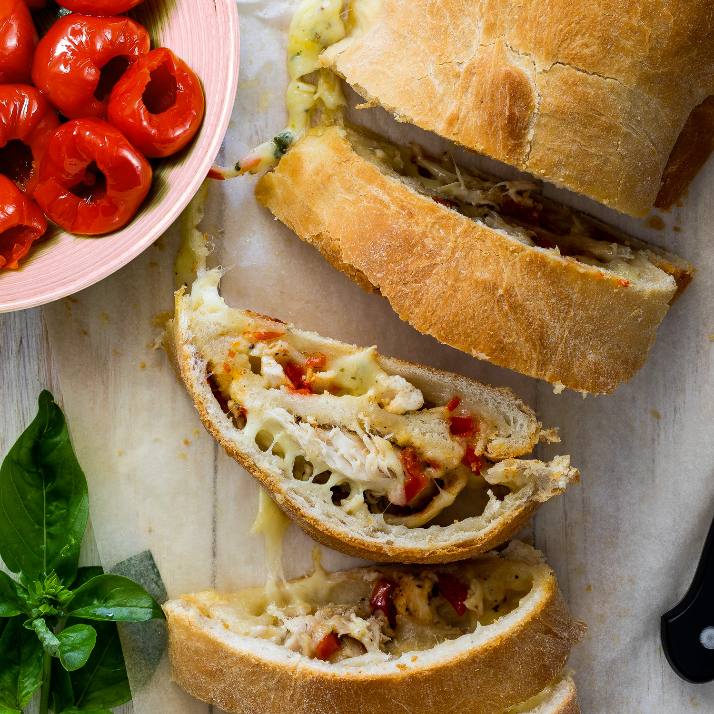

Cheesy chicken stuffed bread

Description
This easy stuffed bread recipe with cheese and chicken is fantastic as an easy lunch or dinner
Ingredients
- Bread dough
- Shredded cooked chicken
- Peppers roughly chopped
- 2 cups rated mozarella
- Salt and pepper to taste
- Chilli sauce
How to
- Prepare dough according to instructions and leeve to rise.
- When the dough has proofed, roll it out into a large rectangle on a floured surface.
- Sprinkle over the mozzarella cheese followed by the chicken and peppers and chilli sauce. Season to taste
- Roll the dough into a tight roll then place on a baking sheet topped with baking paper.
- Allow to proof for another 30 minutes while pre-heating the oven to 180°C.
- Place the stuffed bread into the oven and allow to bake for 20-30 minutes until golden brown and cooked through.
- Remove from the oven and allow to cool for 5-10 minutes before slicing and serving.